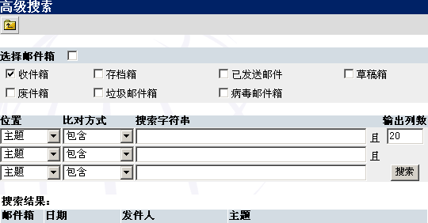

Open Webmail 使用指南
>>
高级搜索
下图即为你将在高级搜索页中所看到的。该页提供了比
搜索工具条
更多的搜索功能。你可以通过点击
主工具条
中的（
 ）进入高级搜索页。 ）进入高级搜索页。

高级搜索页参考图表：
| 搜索项目 | 操作 |
| 选择邮件箱 | 选择你要搜索的邮件箱。如果点击“选择邮件箱”右边的选取框，则全部邮件箱均被选定。 |
| 位置 | 选择搜索邮件的哪一部分。 |
| 对比方式 | 确定搜索过滤方式。 |
| 搜索字符串 | 确定要搜索什么内容。 |
| 输出列数 | 确定输出多少内容。 |
| 搜索结果 | 按下“搜索”后，显示所有符合条件的结果。 |
|